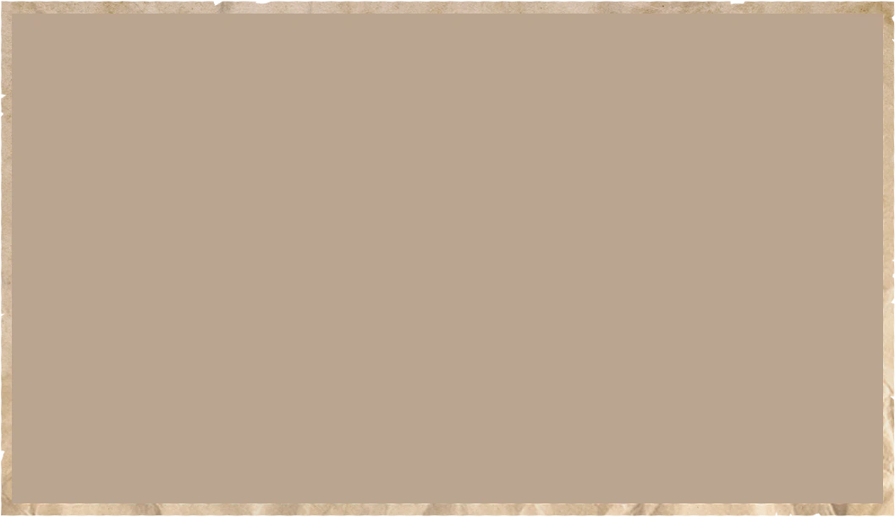
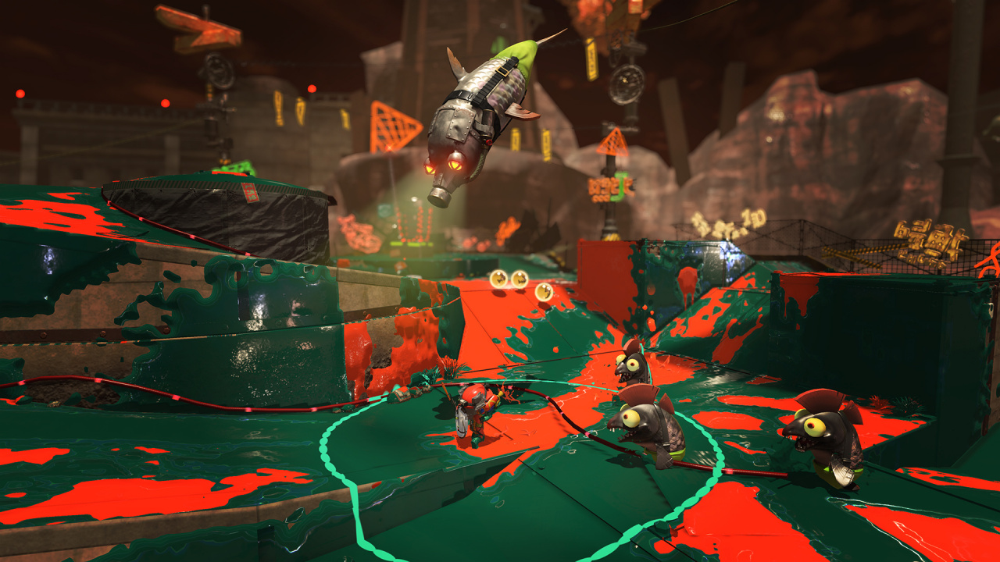
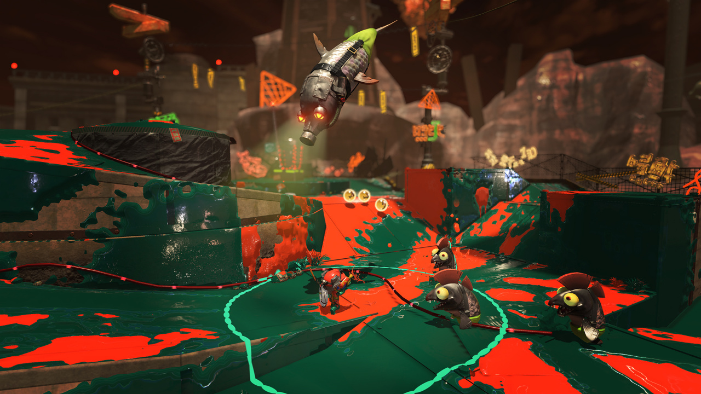
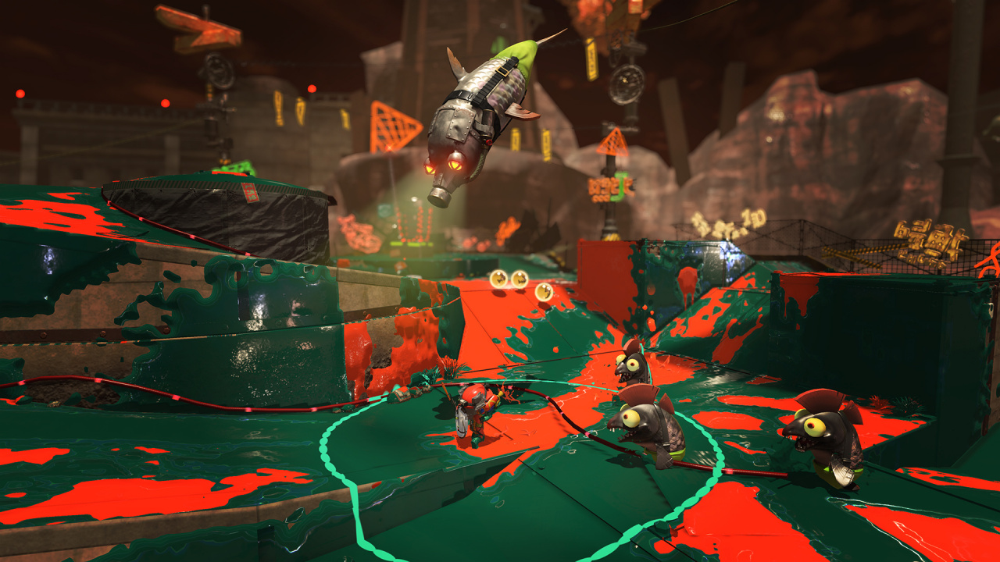
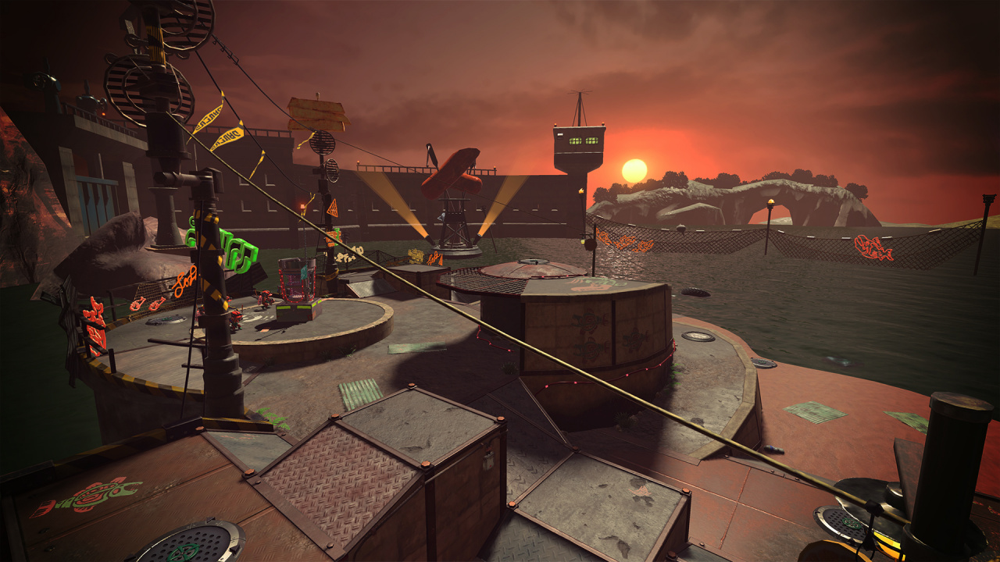
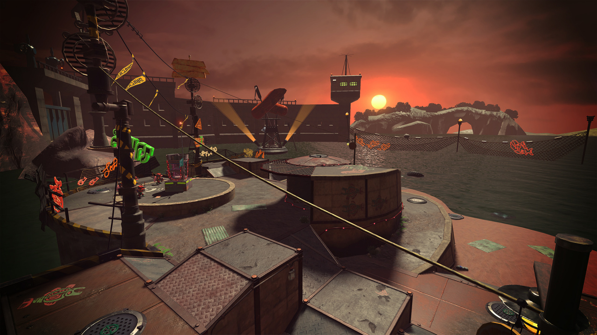
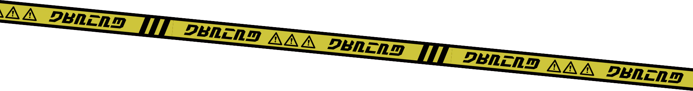
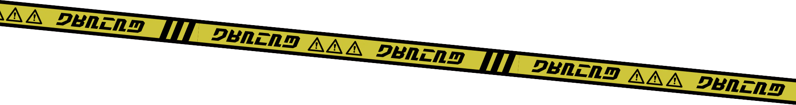
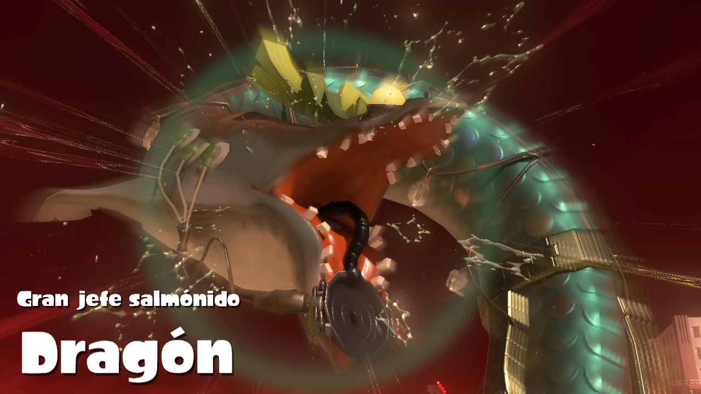

 




2.1.0 Salmónidos Menores
Los Salmonidos Menores son enemigos comunes en el modo Salmon Run - Next Wave.
Son criaturas pequeñas y variadas que atacan en hordas, representando una amenaza constante
para los jugadores.
Se agrupan en diferentes tipos con habilidades y comportamientos únicos, como los Salmoides,
Escamitas y Agallones.
Los Salmonidos Menores atacan a los jugadores directamente y pueden ser derrotados para
recolectar huevecillos de poder.
Su diversidad y la necesidad de adaptarse a diferentes amenazas los convierten en un desafío
constante en Salmon Run - Next Wave.


2.2.0 Grandes Salmónidos (Los que sueltan huevecillos dorados):
Los Grandes Salmónidos son enemigos especiales y más formidables en el modo Salmon Run -
Next Wave.
Estas criaturas son significativamente más grandes que los Salmónidos Menores y tienen un
papel central en el juego.
Los Grandes Salmónidos sueltan huevecillos dorados, que son esenciales para completar los
objetivos de recolección.
Requieren estrategias específicas para ser derrotados, como trabajar en equipo para
enfocarse en ellos.
Su derrota y la recolección de huevecillos dorados son fundamentales para tener éxito en
Salmon
Run - Next Wave, ya que estos huevecillos son necesarios para avanzar en las oleadas y ganar
el juego.

 



 



Desafío de los Grandes Jefes Salmonidos


Enfrenta a los Grandes Jefes Salmonidos, coordina tu equipo y utiliza el
poderoso "Cañón de huevecillos dorados" para obtener valiosas recompensas.
- Los Grandes Jefes Salmonidos son enemigos gigantes que aparecen ocasionalmente en el modo Salmon Run - Next Wave, cambiando el objetivo de la partida.
- Los jugadores pueden utilizar el "Cañón de huevecillos dorados" cuando tienen huevos dorados para lanzar ataques poderosos contra estos jefes.
- Su aparición depende de un medidor en forma de salmónido que se llena entre partidas en el vestíbulo de Salmon Run - Next Wave.
- Se desbloquea una ronda extra en la que se enfrentan a estos jefes cuando el medidor se llena, lo que permite recolectar escamas valiosas.
- Derrotar al gran jefe salmónido requiere una coordinación efectiva del equipo y es un desafío significativo.
- Los jugadores pueden elegir utilizar sus ataques especiales contra el Salmonote para infligirle daño adicional.
- Aprovechar al máximo los recursos disponibles, como el ataque especial, es esencial para aumentar las posibilidades de victoria en las rondas con Grandes Jefes Salmónidos en Splatoon 3.



"Próximamente, desafíos aún más épicos con gigantescos jefes Salmónidos te esperan en
Splatoon 3."


Formulario de Opiniones sobre SALMON RUN - NEXT WAVE